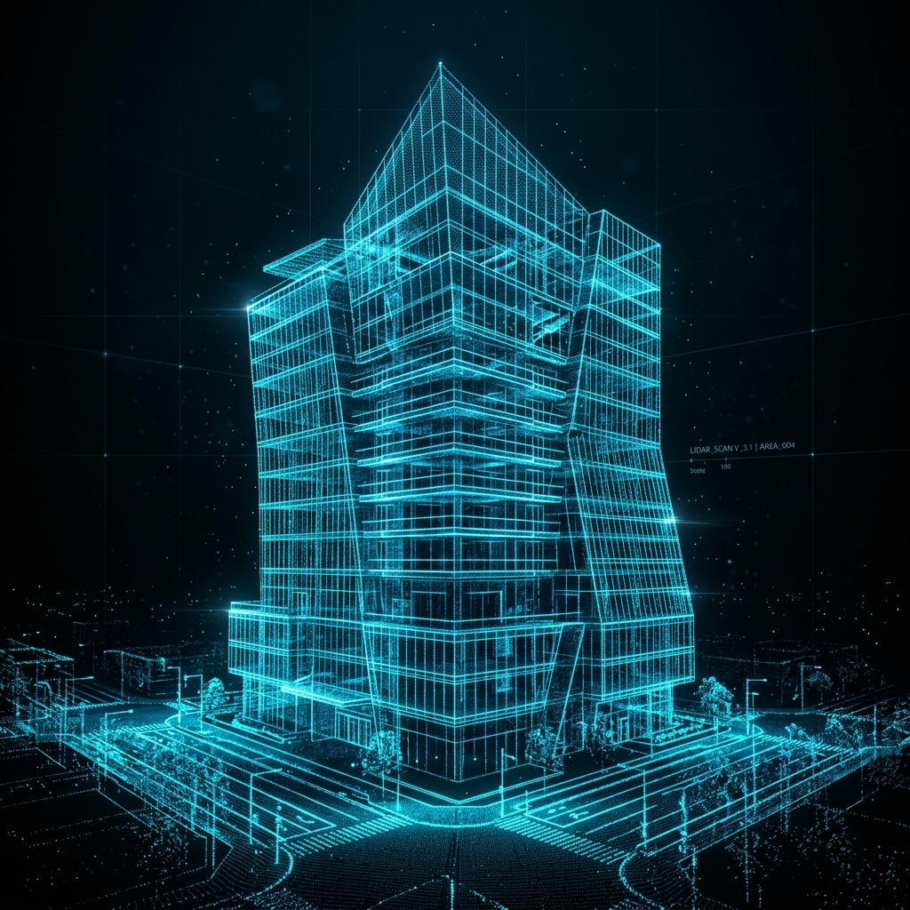

Surface Capture
High-resolution terrestrial laser scanning and photogrammetry mapping the exact above-ground physical reality.
Millimeter-accurate point cloud data and Scan-to-BIM modeling for zero-risk infrastructure.
Looking for a 3D scanning company near you? Operating from Johannesburg to Cape Town, we provide local heavy industry with globally competitive spatial data.

We convert complex physical assets into sub-millimeter accurate digital models. Whether you need structural clash detection or heritage preservation, our reality capture workflows deliver absolute precision.
Have an official RFP or CAD file? Email our engineering team directly.
Capture every structural beam, pipe line, and wall tolerance with high-definition LiDAR precision up to ±2mm.
Reduce field measurement downtime by up to 75%. Rapid multi-station scans capture millions of points per second.
Pre-detect MEP & structural clashes in Navisworks/Revit before fabrication or site installation begins.
Tailored 3D scanning solutions for diverse industrial and architectural needs.
Digitize legacy machinery and physical assets into native CAD-ready files for remanufacturing, rapid prototyping, and reverse engineering.
Detailed as-built surveys, structural analysis, and topographic surveying for complex buildings, infrastructure, and heavy industrial plants.
Compare manufactured parts against original CAD designs to instantly identify deviations and ensure quality control.
Translate raw point cloud data (.RCP, .E57) into intelligent LOD 300-500 BIM models (Revit) for architectural planning and facility management.
We provide professional 3D laser scanning services across South Africa, capturing spatial data with unprecedented accuracy. We deliver unified deliverables native to your CAD/BIM software workflow.
Our advanced 3D laser scanners capture spatial data with unprecedented accuracy. Whether scanning intricate mechanical parts or expansive architectural structures, we guarantee sub-millimeter tolerances to ensure your digital twin is a flawless representation of reality.
Capturing data is only the first step. We leverage high-end processing software including Maptek PointStudio, Deswik, and standard CAD/BIM environments. This allows us to handle massive datasets seamlessly, providing you with actionable insights for complex civil, mining, and architectural projects.
We de-risk your projects by bundling comprehensive surface and subsurface data into a single, unified deliverable.
High-resolution terrestrial laser scanning and photogrammetry mapping the exact above-ground physical reality.
Ground Penetrating Radar (GPR) integration to accurately detect and model underground utilities, voids, and structures.
Both datasets are strictly registered and compiled into a single clash-free 3D model for engineering analysis.
We deliver registered point cloud data in .RCP, .E57, and .LAS formats (100% compatible with Autodesk Revit, AutoCAD, Navisworks, and ArchiCAD), as well as native 3D .RVT BIM models (LOD 200–500) and 2D/3D .DWG CAD drawings ready for immediate design workflows.
Our high-definition terrestrial LiDAR scanners achieve sub-millimeter to ±2mm spatial accuracy. This millimeter precision allows engineering and architectural teams in South Africa to pre-detect clashes and eliminate costly site rework before fabrication or construction begins.
A Point Cloud is a raw 3D digital measurement map composed of millions of laser points (.RCP/.E57). Scan-to-BIM converts that raw point cloud into an intelligent, parametric 3D Revit model (.RVT) containing smart building objects like structural beams, walls, pipes, and MEP systems for architectural design and facility management.
Our localized survey teams in South Africa can mobilize within 24 to 48 hours of project approval. On-site scanning is up to 75% faster than manual surveying (typically 1 to 2 days on site), and registered point clouds or 3D BIM models are delivered within 3 to 5 business days.
Yes. Non-contact terrestrial laser scanning operates safely from a distance without touching equipment or disrupting plant operations. Our field surveyors hold safety certifications and medical clearances to operate on active construction sites, chemical plants, and underground mines across South Africa.
Pricing is based on site square footage/acreage, spatial complexity (e.g., commercial building vs. complex industrial MEP plant), and requested deliverable type (raw point cloud vs. LOD 300–500 BIM model). You can request an instant indicative cost estimate via our online estimator tool.

Don't have specialized CAD software? No problem. We provide all our point clouds and digital twins via a highly intuitive, browser-based cloud platform.
Get an instant price estimate for millimeter-accurate point cloud data, Scan-to-BIM Revit modeling, and 3D reality capture across South Africa.
Trusted by Top AEC & Mining Firms Across South Africa